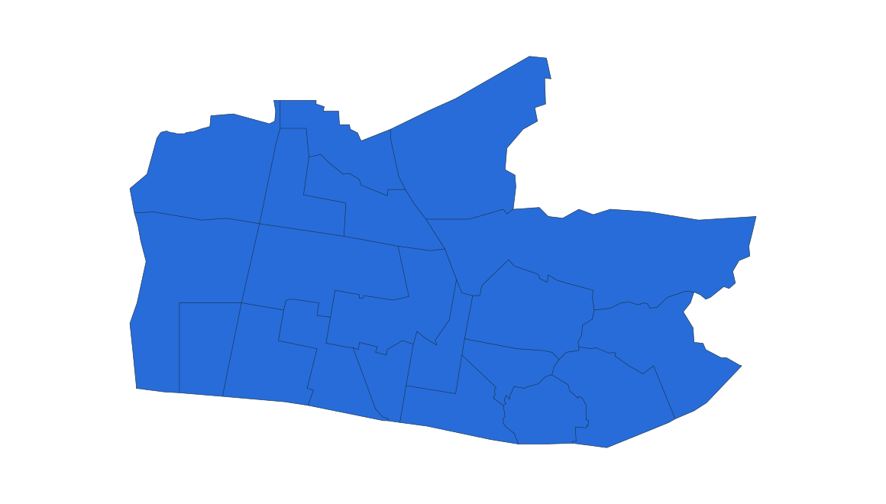
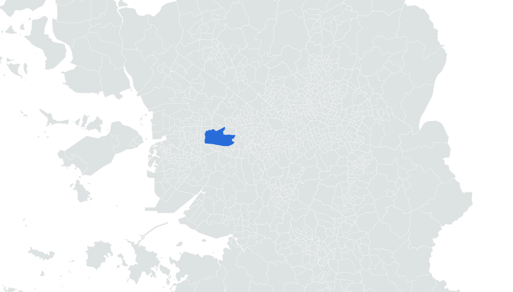

부동산 데이터 | 신혼부부가 사는 곳
20위 부천시 원미구
2024.11.1 거주 기준 · 신혼부부 전체 · 단위: 쌍

거주 신혼부부
7,365쌍


부천 상동 도시 가로
실제 장소 자료사진 · 촬영 2025
사진: Kimhs5400(누리위키) · CC BY 4.0
원미구 경계 · 수도권 내 위치 · 2024 통계구역
앞뒤 순위 · 같은 0–16,000쌍 척도
16
???
???
17
???
???
18
???
???
19
???
???
20
원미구
7,365
통계: 통계청 「2024년 신혼부부통계」 수도권 구별 집계 | 지도: SGIS · vuski/admdongkor, CC BY 4.0 · 2024 경계